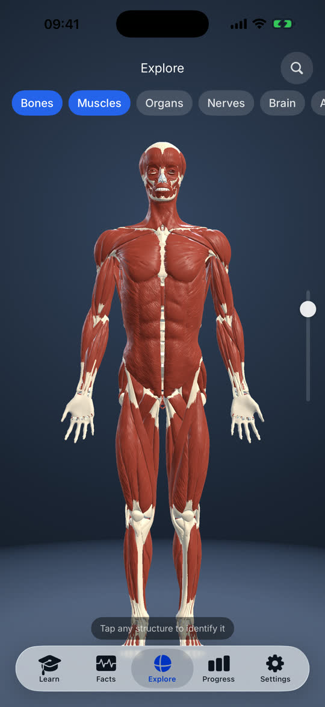
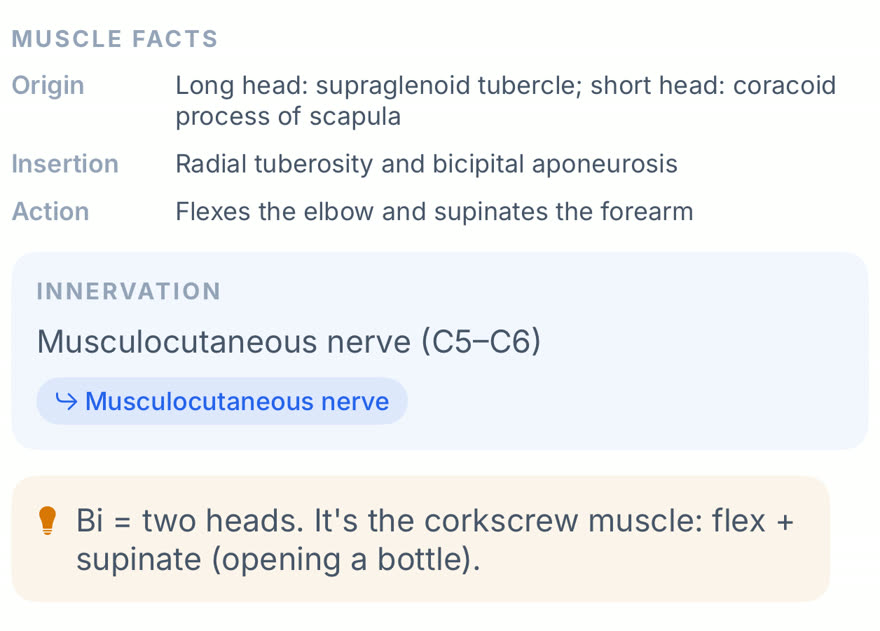
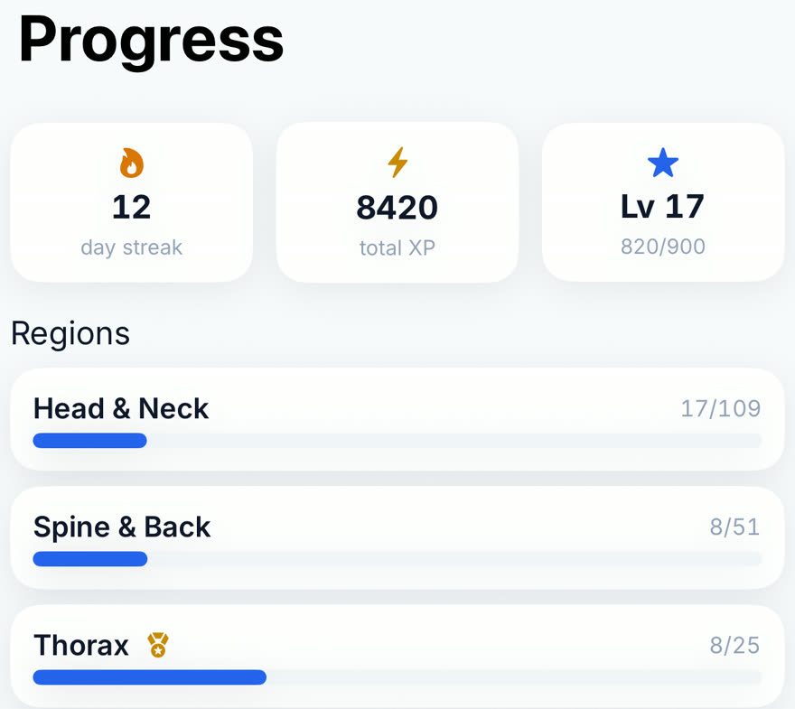
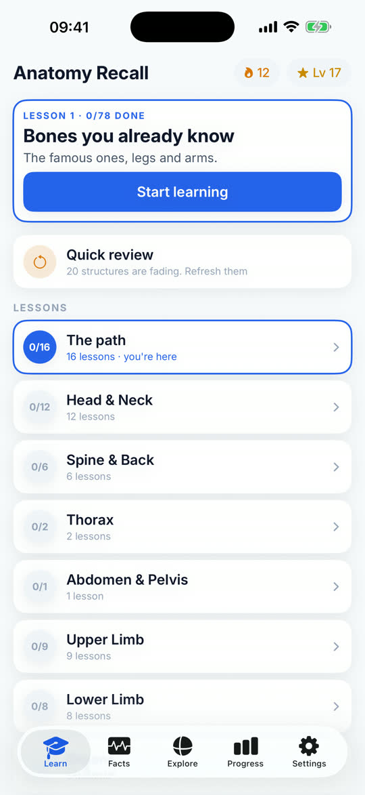
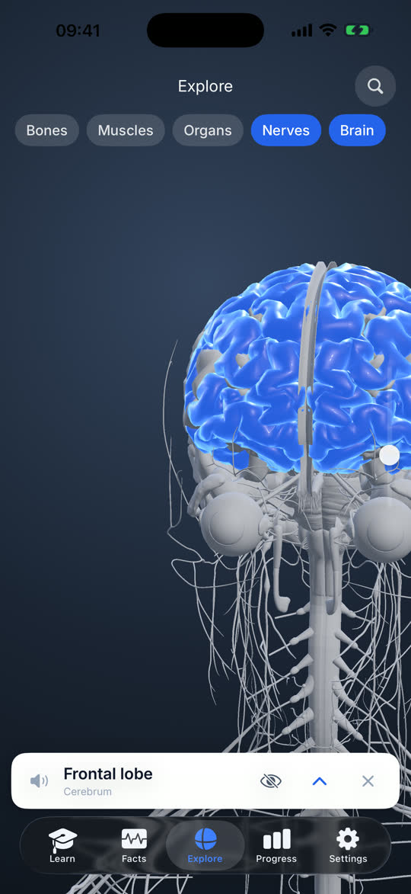
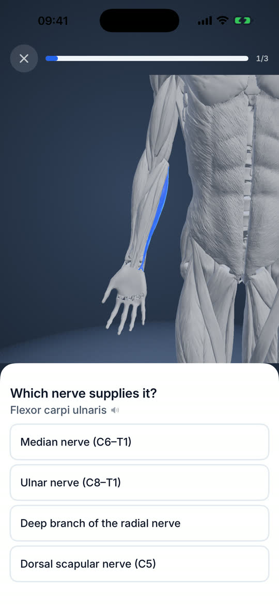

Why it is built around nerves
One nerve.
Three muscles.
The musculocutaneous nerve leaves C5 and C6, passes through coracobrachialis, and supplies biceps brachii and brachialis on the way down. Learn the nerve and you have learned three muscles at once, which is exactly how you get asked it in a viva.
Tap the speaker button if you want to hear it.
The problem
Atlases are beautiful.
You still forget them.
You meet a structure once, nod, and lose it by Thursday. Anatomy Recall is built around the part that actually takes work: keeping the names after you have met them.

A whole body, in your hand
Spin it, peel the superficial muscles away to reach what is underneath, and drop every other layer to see the brain inside the skull. Tap anything to identify it.
- Skeleton, muscles, organs and vessels, and the full nervous system
- Brain, spinal cord, plexuses and every named nerve
- Built on Z‑Anatomy, the open anatomical atlas

Every muscle's nerve supply
Musculocutaneous nerve, C5 to C6. All 212 muscles carry their innervation with root values, and the nerve is a link, so you can jump from the muscle to the nerve and back.
- Origin, insertion and action on the same card
- Clinical notes where a structure actually matters in practice
- A quiz mode that asks nothing but "which nerve supplies it?"

It decides what to ask you
An FSRS spaced-repetition scheduler tracks every structure separately and surfaces the ones about to fade. You open the app and start, rather than deciding what to revise.
- Seven question types, including audio and typed recall
- Per-region mastery, so you can see the gaps
- Boss exams when a region is ready to be tested properly
Also inside
Lessons, the brain, and nerve drilling



Pay once. Keep it.
Not a subscription, not a trial, not a per-year student licence. The App Store shows the price in your currency.
- Every structure and every question type included
- iPhone and iPad, one purchase
- No account, no sign-in, no server holding your progress
- Works with the phone in flight mode
Requires iOS 26 or iPadOS 26.
Support
Questions, and how to reach a human
Found a bug, spotted a factual error in the anatomy, or want something added? Open an issue and it will be read. Corrections to anatomical content are especially welcome: say which structure and what is wrong, and it gets fixed in the next update.
Do I need an account?
No. There is no sign-in and no server. Your progress lives on your device.
Does it work without internet?
Yes, entirely. The models, audio and content are all bundled in the download.
Which devices does it run on?
iPhone and iPad on iOS 26 or iPadOS 26 and later. Everything in the app works on any of them. The built-in AI tutor runs on devices that support Apple Intelligence; on the others it needs your own Claude API key.
What is the AI tutor, and does it send my data anywhere?
It answers questions about whatever structure you are looking at. On devices with Apple Intelligence it runs on-device and sends nothing. Otherwise you can add your own Claude API key in Settings, and then your question, the conversation so far and the names of structures you recently studied or got wrong go to Anthropic to be answered. Nothing is sent unless you enter a key. The privacy policy has the detail.
How do I wipe my progress?
Settings, then Reset all progress, and tap it again to confirm. Or delete the app.
Where does the anatomy come from?
The 3D models are derived from Z-Anatomy (CC BY-SA 4.0), itself derived from BodyParts3D by the Database Center for Life Science, Japan. Full attribution, including the non-commercially-licensed parts that were removed, is in the app under Settings, then Credits & licenses.
Is there an Android or Mac version?
No Android version yet. It is native iOS and iPadOS. The iPad app also installs on Apple silicon Macs running macOS 26; a native Mac version is in preparation.